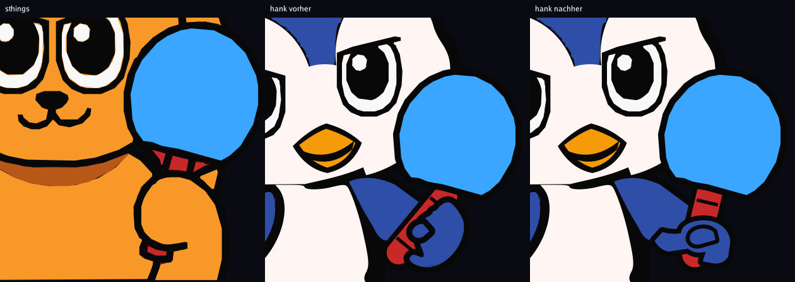
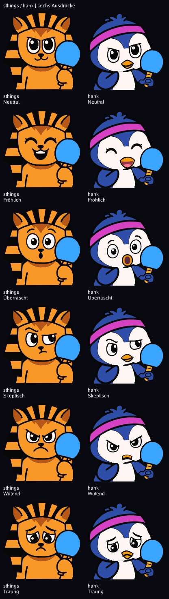
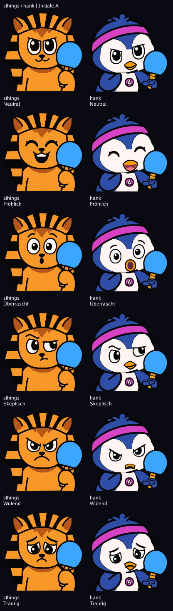
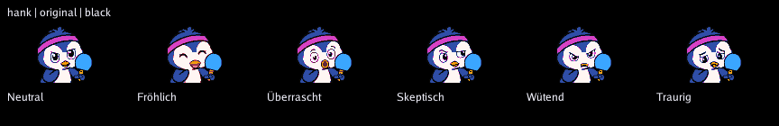
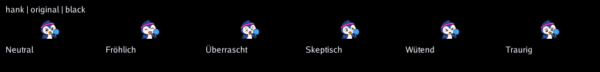

Fläche exakt wie 8822413, Rahmung 110 %. Griffachse 13,42°, Abweichung zur Flächenachse 2,17°. Freier Griffhals 25,1; unteres Ende 10,4. Unterscheidbarkeit 193, Skeptisch/Wütend.
Vollständiger Messbericht · Achsmessungen





192 px Navy · 192 px Schwarz · 64 px Schwarz · 28 px Schwarz
Offen: optische Abnahme und echter LED-Test.